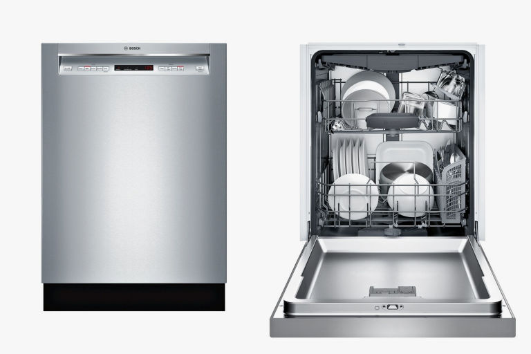
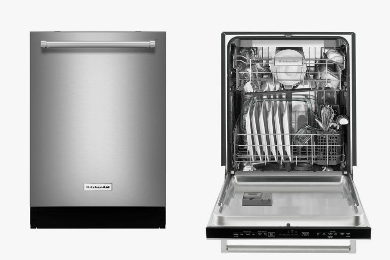
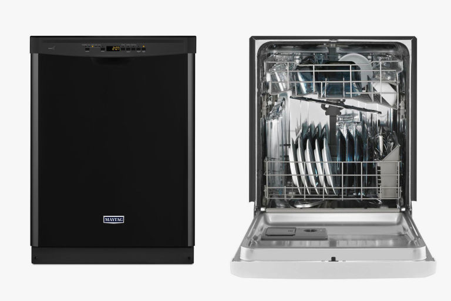

Review of 3 dishwashers!
Is your dishwasher starting to slack off? Getting leftovers on your "clean" plate? Maybe its time for a new one then, and luckily for you we got some good replacements! In this product review/guide we check out pros and cons on 3 dishwasher. A good dishwasher may save hours every week, while a bad one might even waste some time. Having a effective dishwasher is not just a convenience, it's an investment for time.
Bosch 300 Series SHEM63W55N Dishwasher
Best overall dishwasher
Pro: Has a unique "RackMatic System" for adjusting the racks and making room for a ton of dirty dishes
Con: We wish it dried plastic just a little faster
In short: The Bosch 300 Series is one of the most reliable dishwashers you can buy. It features an attractive stainless steel design, is extremely quiet, and is incredibly spacious thanks to its third rack.
If you're looking for the most bang for your buck, the Bosch 300 Series won't disappoint. Based on our extensive evaluation, Bosch is one of the most reliable brands of dishwashers. Yale Appliance found that only 9.6% of Bosch dishwashers sold throughout 2016 and 2017 needed service in the first year of ownership.
Not to mention that the 300 Series is one of the highest-rated dishwashers by users across Best Buy, Google Shopping, Home Depot, Lowes, and other major retailers. If something does go wrong, Bosch is known for its impressive customer service and great warranty — both labor and parts have a one-year warranty, the racks and electrical systems have a five-year warranty, and the tub and door liner are covered for life. Should you need support, you won't be left hanging.
The Bosch SHEM63W55N is well-designed, spacious, quiet, and energy-efficient, and it has plenty of cycles. If you have a big family or entertain often, you'll appreciate its convenient V-shaped third rack, which offers up to 30% more capacity than other dishwashers. Its middle rack also features a handy height-adjusting "RackMatic System," which quickly adjusts to three different sizes all in one easy step (you can even adjust it while everything is loaded!). It offers you up to nine rack positions, meaning you can make room for almost any and all dirty dishes, pots, pans, and more.
KitchenAid KDTE254ESS Dishwasher
Best Dishwasher for Quiet Operation
Pro: Extremely quiet
Con: Has a manual filter, but this actually contributes to its quiet noise-level
In Short: The KitchenAid KDTE254ESS is a powerful, whisper-quiet dishwasher with a large interior that has room for 14 place settings. It features an attractive stainless steel design, three racks, and hidden controls.
There are several factors to consider when shopping for a new dishwasher: how many racks it has, its number of wash cycles, how many place settings it'll hold, and how quickly it runs, among others. However, some people consider the most important quality of a dishwasher to be its overall loudness. We've researched hundreds of dishwashers and determined that the KitchenAid KDTE254ESS is the best quiet dishwasher money can buy.
This KitchenAid uses a filter rather than a food disposer to eliminate small particles, achieving a 39 decibel rating, making it much quieter than other models. For context, a whisper measures in at 15 decibels, an air conditioner is 60 decibels, and a lawn mower is about 90 decibels. It's also important to note that a dishwasher that's 4 decibels louder than another is twice as loud in comparison. So, the KitchenAid's 39-decibel rating is significantly quieter in comparison to the average 45 decibel reading of most other dishwashers. If you want to hear two dishwashers side-by-side, Yale Appliances mic'd up two dishwashers in the kitchen so you can compare their sound levels for yourself.
Basically, you'll only be able to hear the murmur of this KitchenAid dishwasher if you're standing directly next to it, making it perfect for open concept homes. This leaves you with no worry of loud whooshing rinse cycles to disrupt your movie night or next TV binge.
While the KDTE254ESS isn't actually the quietest dishwasher (the Samsung DW80M9960US is one decibel quieter), it holds up better than other 38-decibel models, and it's a greater value.
Best Dishwasher for Quiet Operation
Pro: Attractive price and long warranty
Con: We wish it was a little quieter, but it still gets the job done
In Short: The Maytag MDB4949SDZ may not be the most powerful or feature-filled dishwasher, but it's a reliable and affordable pick that does its job well.
This dishwasher from Maytag is going to be your best bet if you're willing to put up with a noticeably louder 50-decibel cycle, sacrifice a third rack, and forfeit some more advanced features for a much more affordable price.
However, if you're willing to live with minor shortcomings, the MDB4949SDZ is an effective dishwasher that's easy to operate and costs less than $500. It features both a stainless steel interior and exterior, a hard-food disposer, and quick heated drying, and it washes up to 12 place settings. It isn't as powerful as other models, so it may leave a tiny bit of food behind. However, it's equipped with a soil sensor, which tells your dishwasher to shorten or extend the cycle based on how much gunk is floating in the water. You can expect about two hours per cycle, and there's even a light that displays the status of the cycle and a lock so children don't interrupt the washer.
Its nylon-coated racks should last for the life of your machine, and they're adjustable for cleaning tall items like pots, trays, and tall glasses. Some people may dislike the front-facing controls that are backed by a small sheet of plastic, which cheapens the dishwasher's overall aesthetic.
And that concludes our review! We wont make choices for you, only give you the information to allow you to make your own choice for your own situation!